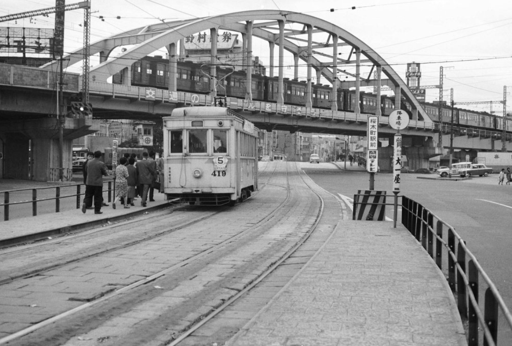
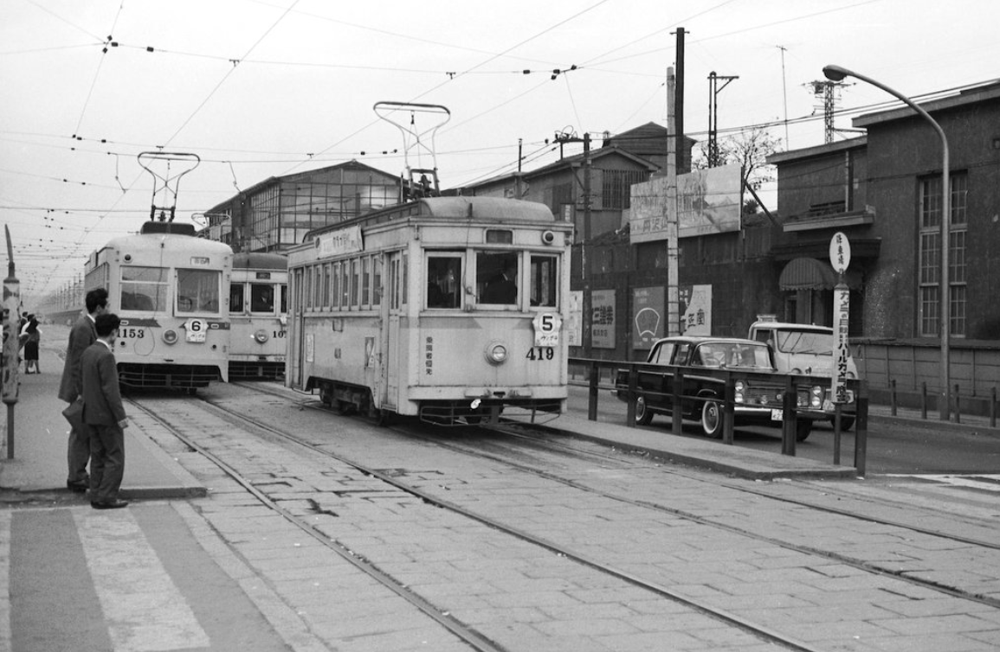
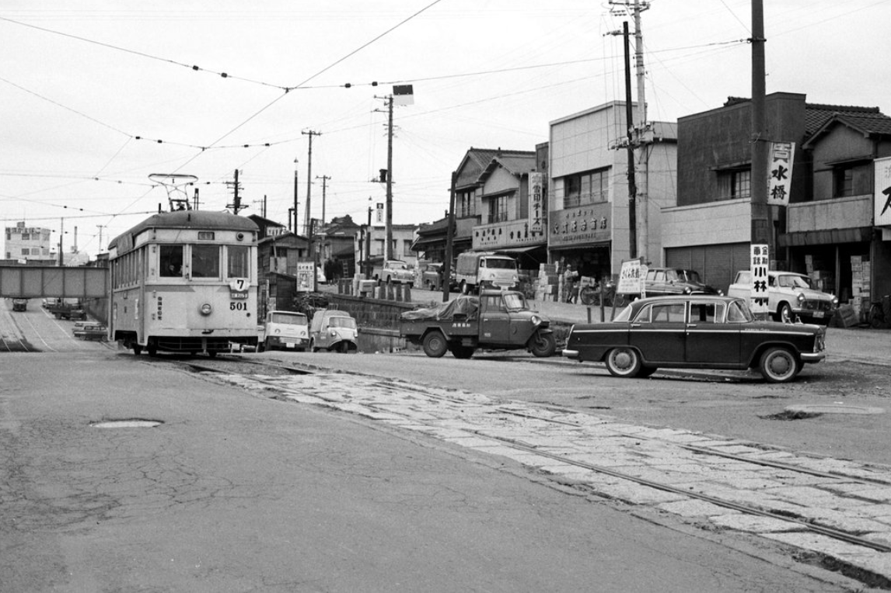
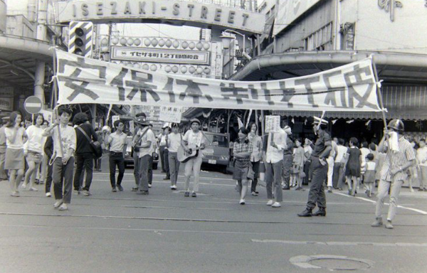

1960~ 横浜の姿を見る
1960年代



撮影 田辺多知夫氏 1963.11.01
Qオリンピックの盛り上がりを見せていたと考えていた1960年代
横浜市内でのオリンピックの盛り上がりを感じられたか
抽象的な話から具体的に話を掘り下げていく
1970年代

Qオリンピックの熱が残るまま大阪万博が開かれた1970年代
社会の雰囲気は大きく変わったか、もしくは変わらなかったか
1980年代～1990年代
Q特に1980年代後半はバブル景気に突入した
オリンピック、万博と流れ、生活の変化を伺う
デザイン演習Ⅰ・Ⅱトップページ